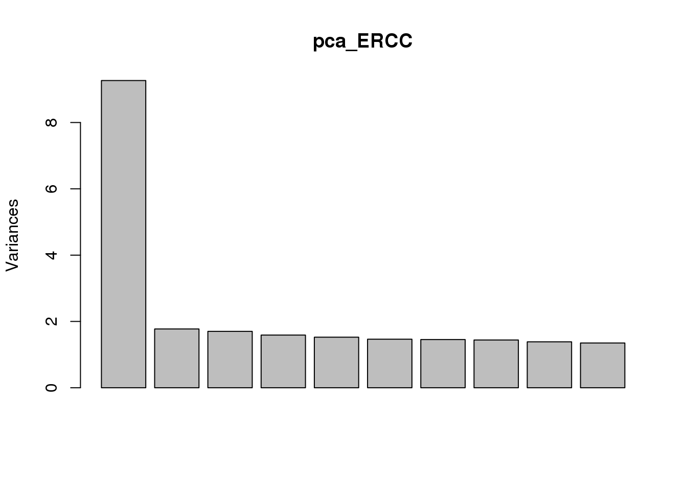
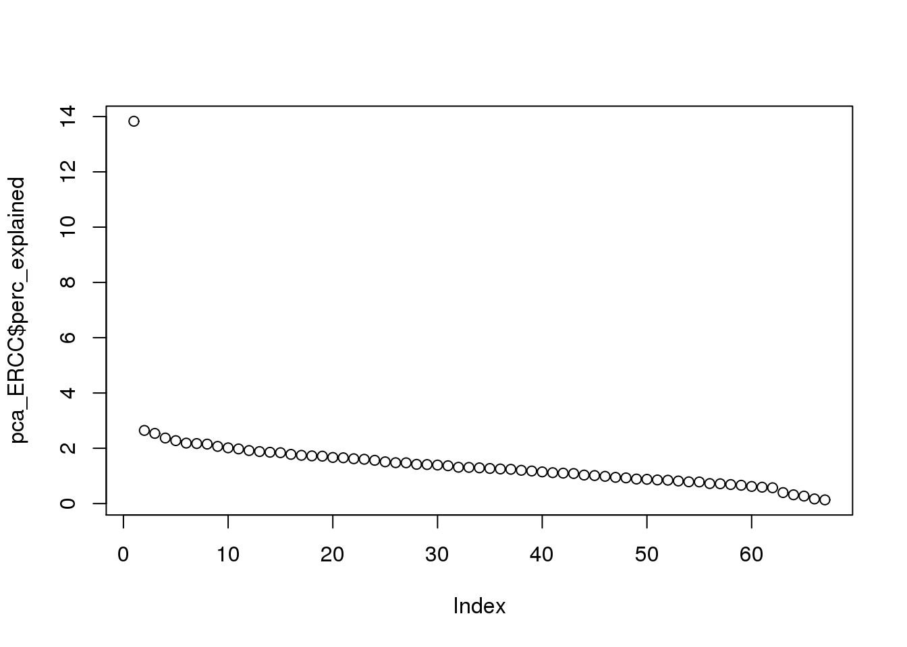
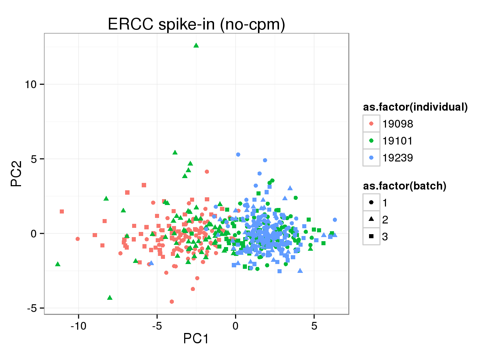
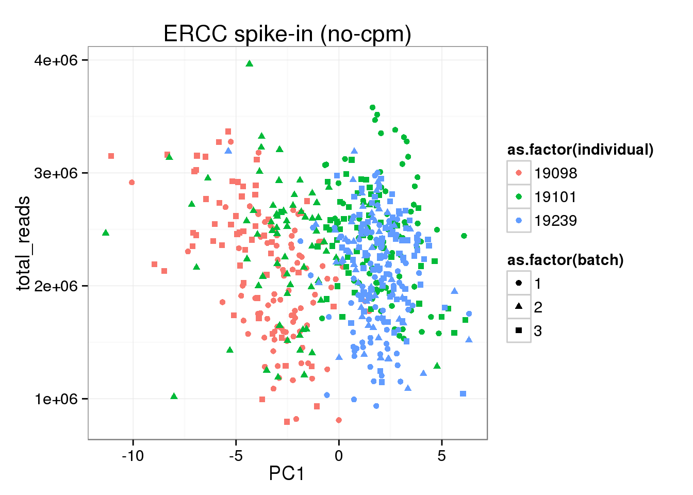
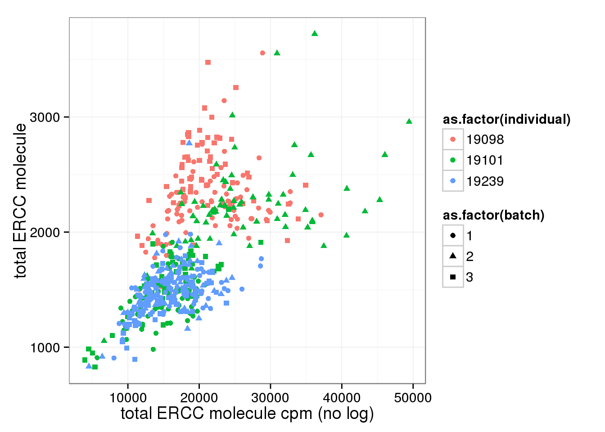
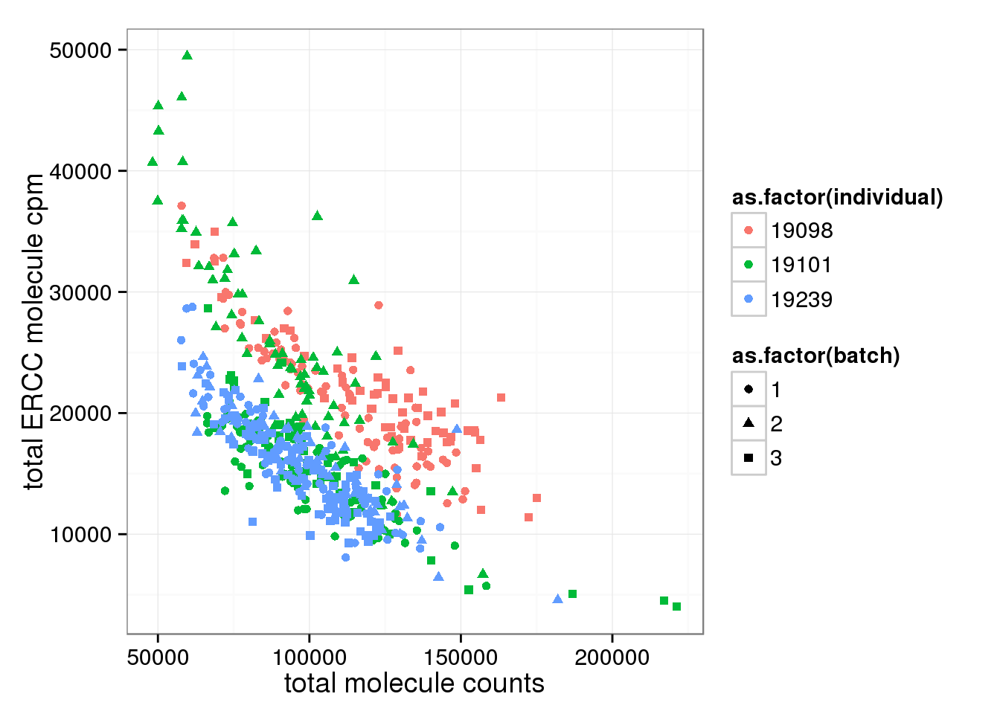

ERCC cmp?
PoYuan Tung
2015-09-07
Last updated: 2015-09-08
Code version: e0d5931510c71158e138077d43fa4a1a1d692201
We standardize the molecule counts to account for differences in sequencing depth. This is necessary because the sequencing depth affects the total molecule counts.
However, according to our study design. Each cell within the same C1 patch, independent of total number of transcripts, should have equal amount of ERCC molecule. As a result, cpm (no log transforamtion) will introduce bias to ERCC, where cells with more molecules will end up with fewer ERCC molecules. Therefore, cpm should not be performed on ERCC genes, but only on endogenous genes.
Input
Input annotation.
anno <- read.table("../data/annotation.txt", header = TRUE,
stringsAsFactors = FALSE)
head(anno) individual batch well sample_id
1 19098 1 A01 NA19098.1.A01
2 19098 1 A02 NA19098.1.A02
3 19098 1 A03 NA19098.1.A03
4 19098 1 A04 NA19098.1.A04
5 19098 1 A05 NA19098.1.A05
6 19098 1 A06 NA19098.1.A06Input molecule counts.
molecules <- read.table("../data/molecules.txt", header = TRUE,
stringsAsFactors = FALSE)Input read counts.
reads <- read.table("../data/reads.txt", header = TRUE,
stringsAsFactors = FALSE)Input list of quality single cells.
quality_single_cells <- scan("../data/quality-single-cells.txt",
what = "character")Prepare single cell molecule data
Keep only the single cells that passed the QC filters and the bulk samples.
molecules <- molecules[, grepl("bulk", colnames(molecules)) |
colnames(molecules) %in% quality_single_cells]
anno <- anno[anno$well == "bulk" | anno$sample_id %in% quality_single_cells, ]
stopifnot(ncol(molecules) == nrow(anno),
colnames(molecules) == anno$sample_id)
reads <- reads[, grepl("bulk", colnames(reads)) |
colnames(reads) %in% quality_single_cells]
stopifnot(ncol(reads) == nrow(anno),
colnames(reads) == anno$sample_id)Also remove batch 2 of individual 19098.
molecules <- molecules[, !(anno$individual == 19098 & anno$batch == 2)]
reads <- reads[, !(anno$individual == 19098 & anno$batch == 2)]
anno <- anno[!(anno$individual == 19098 & anno$batch == 2), ]
stopifnot(ncol(molecules) == nrow(anno))Remove genes with zero read counts in the single cells or bulk samples.
expressed <- rowSums(molecules[, anno$well == "bulk"]) > 0 &
rowSums(molecules[, anno$well != "bulk"]) > 0
molecules <- molecules[expressed, ]
dim(molecules)[1] 17084 571expressed <- rowSums(reads[, anno$well == "bulk"]) > 0 &
rowSums(reads[, anno$well != "bulk"]) > 0
reads <- reads[expressed, ]
dim(reads)[1] 17093 571Split the bulk and single samples.
molecules_bulk <- molecules[, anno$well == "bulk"]
molecules_single <- molecules[, anno$well != "bulk"]
reads_bulk <- reads[, anno$well == "bulk"]
reads_single <- reads[, anno$well != "bulk"]
anno_single <- anno[anno$well != "bulk",]How many genes have greater than or equal to 1,024 molecules in at least one of the cells?
overexpressed_genes <- rownames(molecules_single)[apply(molecules_single, 1,
function(x) any(x >= 1024))]15 have greater than or equal to 1,024 molecules. Remove them.
molecules_single <- molecules_single[!(rownames(molecules_single) %in% overexpressed_genes), ]
reads_single <- reads_single[!(rownames(reads_single) %in% overexpressed_genes), ]Correct for collision probability. See Grun et al. 2014 for details.
molecules_single_collision <- -1024 * log(1 - molecules_single / 1024)Standardization without log transformation (in order to calculate CV for gene expression noise)
molecules_single_cpm <- cpm(molecules_single_collision, log = FALSE)
reads_single_cpm <- cpm(reads_single, log = FALSE)total ERCC vs total molecule and total reads (counts)
Number of total molecule correlates with total read number.
anno_single$total_reads <- apply(reads_single, 2, sum)
anno_single$total_molecules <- apply(molecules_single_collision, 2, sum)
ggplot(anno_single, aes(x= total_reads, y= total_molecules, col=as.factor(individual), shape=as.factor(batch))) + geom_point() + labs(x = "total reads", y = "total molecule")
Look at ERCC and endogenous gene separately. * Total ERCC molecule counts is independent on total reads, total moleceuls, or total gene molecule counts * Total ERCC molecule counts show (surprisngly) individual effect, where 19098 have more and 19239 have fewer.
anno_single$total_ERCC_molecule <- apply(molecules_single_collision[grep("ERCC", rownames(molecules_single)), ],2,sum)
anno_single$total_gene_molecule <- apply(molecules_single_collision[grep("ENSG", rownames(molecules_single)), ],2,sum)
ggplot(anno_single, aes(x= total_reads, y= total_ERCC_molecule, col=as.factor(individual), shape=as.factor(batch))) + geom_point() + labs(x = "total reads", y = "total ERCC molecule")
ggplot(anno_single, aes(x= total_molecules, y= total_ERCC_molecule, col=as.factor(individual), shape=as.factor(batch))) + geom_point() + labs(x = "total molecules", y = "total ERCC molecule")
ggplot(anno_single, aes(x= total_gene_molecule, y= total_ERCC_molecule, col=as.factor(individual), shape=as.factor(batch))) + geom_point() + labs(x = "total endogenous gene molecules", y = "total ERCC molecule")
PC1 of ERCC expression is explained by total ERCC molecule counts, but not total reads or total molecules
## without cpm standardization
molecules_single_ERCC <- molecules_single_collision[grep("ERCC", rownames(molecules_single_collision)), ]
pca_ERCC <- prcomp(t(molecules_single_ERCC), retx = TRUE, scale. = TRUE, center = TRUE)
plot(pca_ERCC)
pca_ERCC$perc_explained <- pca_ERCC$sdev^2 / sum(pca_ERCC$sdev^2) * 100
plot(pca_ERCC$perc_explained)
stopifnot(colnames(pca_ERCC) ==
paste(paste0("NA", anno_single$individual),
anno_single$batch,
anno_single$well, sep = "."))
pca_ERCC_anno <- cbind(anno_single, pca_ERCC$x)
ggplot(pca_ERCC_anno, aes(x = PC1, y = PC2, col = as.factor(individual), shape = as.factor(batch))) +geom_point() + labs(title="ERCC spike-in (no-cpm)")
## PC1 of ERCC expression is explained by total ERCC molecule number
ggplot(pca_ERCC_anno, aes(x = PC1, y = total_ERCC_molecule, col = as.factor(individual), shape = as.factor(batch))) +geom_point() + labs(title="ERCC spike-in (no-cpm)")
ggplot(pca_ERCC_anno, aes(x = PC1, y = total_molecules, col = as.factor(individual), shape = as.factor(batch))) +geom_point() + labs(title="ERCC spike-in (no-cpm)")
ggplot(pca_ERCC_anno, aes(x = PC1, y = total_reads, col = as.factor(individual), shape = as.factor(batch))) +geom_point() + labs(title="ERCC spike-in (no-cpm)")
cpm transformation
After cpm, total ERCC molecule number is no longer independent on total molecule counts.
anno_single$total_molecules_cpm <- apply(molecules_single_cpm, 2, sum)
anno_single$total_ERCC_molecule_cpm <- apply(molecules_single_cpm[grep("ERCC", rownames(molecules_single)), ],2,sum)
anno_single$total_gene_molecule_cpm <- apply(molecules_single_cpm[grep("ENSG", rownames(molecules_single)), ],2,sum)
## before and after cpm
ggplot(anno_single, aes(x= total_ERCC_molecule_cpm, y= total_ERCC_molecule, col=as.factor(individual), shape=as.factor(batch))) + geom_point() + labs(x = "total ERCC molecule cpm (no log)", y = "total ERCC molecule")
ggplot(anno_single, aes(x= total_molecules, y= total_ERCC_molecule_cpm, col=as.factor(individual), shape=as.factor(batch))) + geom_point() + labs(x = "total molecule counts", y = "total ERCC molecule cpm")
Session information
sessionInfo()R version 3.2.0 (2015-04-16)
Platform: x86_64-unknown-linux-gnu (64-bit)
locale:
[1] LC_CTYPE=en_US.UTF-8 LC_NUMERIC=C
[3] LC_TIME=en_US.UTF-8 LC_COLLATE=en_US.UTF-8
[5] LC_MONETARY=en_US.UTF-8 LC_MESSAGES=en_US.UTF-8
[7] LC_PAPER=en_US.UTF-8 LC_NAME=C
[9] LC_ADDRESS=C LC_TELEPHONE=C
[11] LC_MEASUREMENT=en_US.UTF-8 LC_IDENTIFICATION=C
attached base packages:
[1] stats graphics grDevices utils datasets methods base
other attached packages:
[1] ggplot2_1.0.1 edgeR_3.10.2 limma_3.24.9 knitr_1.10.5
loaded via a namespace (and not attached):
[1] Rcpp_0.12.0 digest_0.6.8 MASS_7.3-40 grid_3.2.0
[5] plyr_1.8.3 gtable_0.1.2 formatR_1.2 magrittr_1.5
[9] scales_0.2.4 evaluate_0.7 stringi_0.4-1 reshape2_1.4.1
[13] rmarkdown_0.6.1 labeling_0.3 proto_0.3-10 tools_3.2.0
[17] stringr_1.0.0 munsell_0.4.2 yaml_2.1.13 colorspace_1.2-6
[21] htmltools_0.2.6